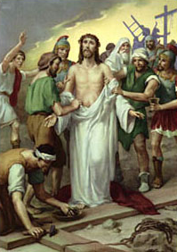

X. állomás: Jézust levetkőztetik, ecettel és epével itatják

"Amikor megízlelte, nem akart belőle inni" (Mt 27,34). Nem kívánt fájdalomcsillapítókat, amelyek elhomályosították volna öntudatát haldoklása során. Öntudattal akart agonizálni a kereszten, beteljesítve az Atyától kapott küldetést. Ez ellentétes volt azzal a gyakorlattal, amelyet a kivégzéssel megbízott katonák folytattak. Amikor az elítéltet a keresztfára kellett szegezniük, megkísérelték érzékelésének, öntudatának a tompítását. Krisztus esetében ez nem történhetett így. Jézus tudja, hogy kereszthalála engesztelő áldozat. Ezért akarja megőrizni éber öntudatát egészen a végsőkig. Enélkül nem fogadhatná el teljesen szabadon a szenvedés egész valóságát. Neki föl kell hágnia a keresztre, hogy felajánlja az Újszövetség áldozatát. Ő pap, akinek saját vére által kellett belépnie a szentélybe, miután örök megváltást szerzett a világnak (vö. Zsid 9,12). Öntudat és szabadság: ezek visszautasíthatatlan tulajdonságai a teljes értékű emberi cselekedetnek. A világ annyi sok eszközét ismeri az akarat meggyengítésének és az öntudat megzavarásának. Féltve, őrizve kell megvédenünk minden erőszaktól! A megengedett szándék, amely a fájdalom csökkentésére irányul, mindig tiszteletben tartja az emberi méltóságot. Mélységében kell megértenünk Krisztus áldozatát, egyesülve vele, hogy el ne essünk, meg ne engedjük, hogy az élet és halál elveszítsék értéküket.
Úr Jézus, aki teljes odaadásodban a mi üdvösségünkért elfogadtad a kereszthalált, tégy minket és a világon minden embert a kereszten bemutatott áldozatod részesévé, hogy létünk és munkálkodásunk szabadon és öntudattal részesedjék a te üdvözítő művedben. Neked Jézus, főpap és áldozat, tisztelet és dicsőség mindörökkön örökké. Amen.